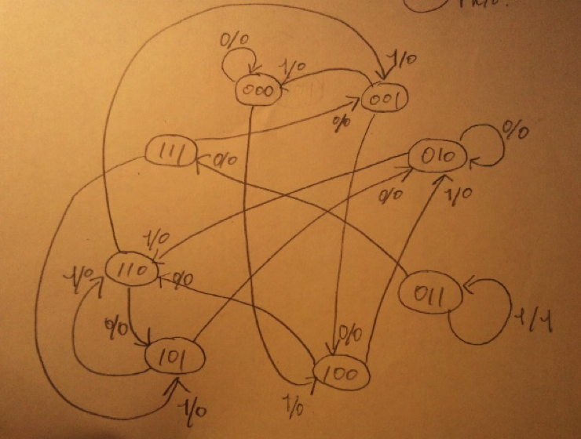

主記憶は大容量であるがCPUの処理速度と比べるとアクセス速度が比較的低速という欠点があり、CPUがいくら高速でも主記憶がボトルネックとなって性能の向上の足かせとなってしまう。そこでCPUと主記憶の間に小容量であるが高速という特徴を持つキャッシュメモリを間に挟むことにより、２つ合わせて擬似的に高速大容量のメモリを構成する。
主記憶が容量不足になった場合に仮想的に補助記憶装置の記憶領域の一部をメモリの足りなくなった領域を補うように使用することで、補助記憶装置の空き容量が十分確保されていれば論理的に実現可能なアドレス空間を最大限に使用することが可能となる。例えば32bitコンピュータでは約４GBのアドレス空間が使用可能であるが、例え物理的に２GBのメモリしか挿していなかったとしても、残りの２GBは補助記憶装置上に確保することで、４GB分のアドレス空間を使用することが可能になる。ただし補助記憶装置へのアクセスは比較的非常に遅いため、出来る限り使用は避けるべきではある。
補助記憶装置を利用して物理メモリ容量以上のメモリ容量を実現する技術。
ソフトウェアで言う連想配列をハードウェア上で実現したもの。一般的なメモリではアドレスを指定すると、そのアドレスに格納されたデータが返ってくるが、連想メモリではデータワードをキーとして全内容からそのデータワードを同時に比較し、検索する。データが見つかれば、そのデータが見つかった場所のアドレスを返す。ハードが非常に複雑になる。
一般的にCPUに近い方からキャッシュメモリ、主記憶、補助記憶装置で構成されており、CPUに近い記憶装置ほど高速で小容量。逆にCPUに遠いほど低速で大容量の記憶装置で構成されている。理想的には高速大容量の記憶装置があればよいが、コスト的にも技術的にも困難であるため、これらの記憶装置を組み合わせることで、擬似的に高速かつ大容量の記憶装置を実現する。
z = ( x * Q1 * Q2 * (Q3) ? )
Q1’ = (Q1 + Q3) * Q2
Q2’ = Q2 xor Q3
Q3’ = (Q1 xor Q3) xor x
入力：ｘ
状態：Q3Q2Q1
| x | Q3 | Q2 | Q1 | nextQ3 | nextQ2 | nextQ1 | z |
| 0 | 0 | 0 | 0 | 0 | 0 | 0 | 0 |
| 0 | 0 | 0 | 1 | 1 | 0 | 0 | 0 |
| 0 | 0 | 1 | 0 | 0 | 1 | 0 | 0 |
| 0 | 0 | 1 | 1 | 1 | 1 | 1 | 0 |
| 0 | 1 | 0 | 0 | 1 | 1 | 0 | 0 |
| 0 | 1 | 0 | 1 | 0 | 1 | 0 | 0 |
| 0 | 1 | 1 | 0 | 1 | 0 | 1 | 0 |
| 0 | 1 | 1 | 1 | 0 | 0 | 1 | 0 |
| 1 | 0 | 0 | 0 | 1 | 0 | 0 | 0 |
| 1 | 0 | 0 | 1 | 0 | 0 | 0 | 0 |
| 1 | 0 | 1 | 0 | 1 | 1 | 0 | 0 |
| 1 | 0 | 1 | 1 | 0 | 1 | 1 | 1 |
| 1 | 1 | 0 | 0 | 0 | 1 | 0 | 0 |
| 1 | 1 | 0 | 1 | 1 | 1 | 0 | 0 |
| 1 | 1 | 1 | 0 | 0 | 0 | 1 | 0 |
| 1 | 1 | 1 | 1 | 1 | 0 | 1 | 0 |

101と010のみ統合可能？
011や111のような入力後に二度と帰ってくることは無いような状態は無視？分からない。